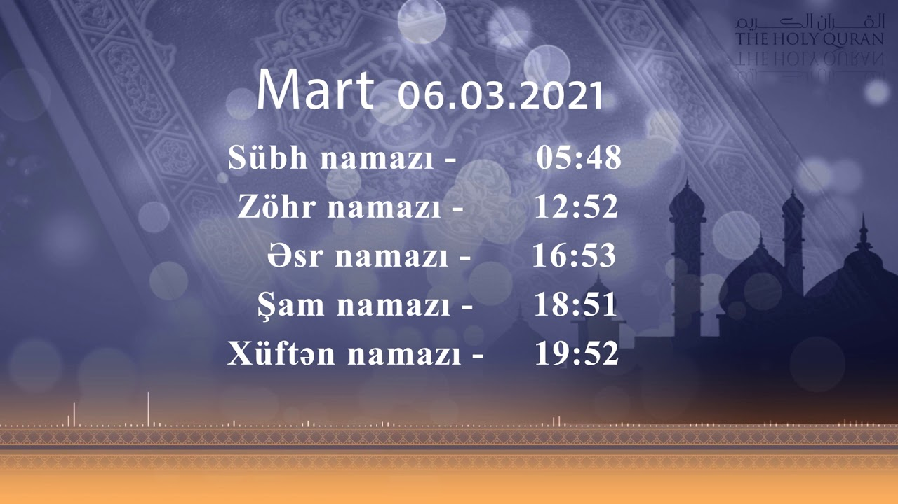

Mallarını Allahın razılığını qazanmaq və nəfslərini (imanlarını) sabitqədəm etmək yolunda sərf edənlər uca təpənin üstündə olan bir bağa bənzərlər ki, ora düşən bol yağış onun meyvələrini ikiqat artırar. Əgər bol yağış yağmasa, az bir şəbnəm (şeh də ona kifayət edər). Həqiqətən, Allah nə etdiyinizi (bütün əməllərinizi) görəndir